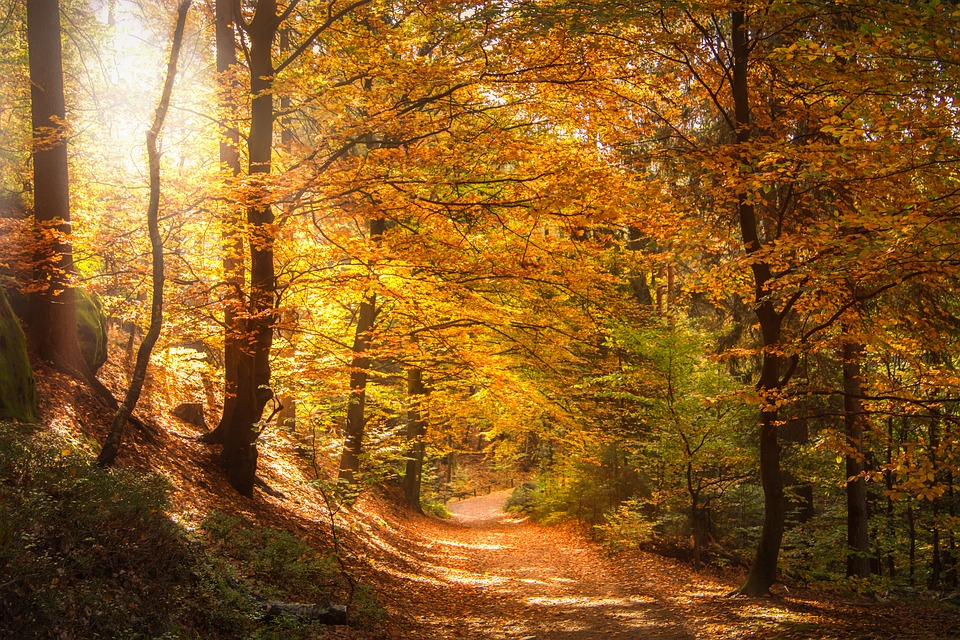

Autumn (sometimes called fall) is one of the four seasons of the year and is the time of year that transitions summer into winter. Along with the tree leaves changing color, the temperature grows colder, plants stop making food, animals prepare for the long months ahead, and the daylight starts growing shorter.
Visit our website